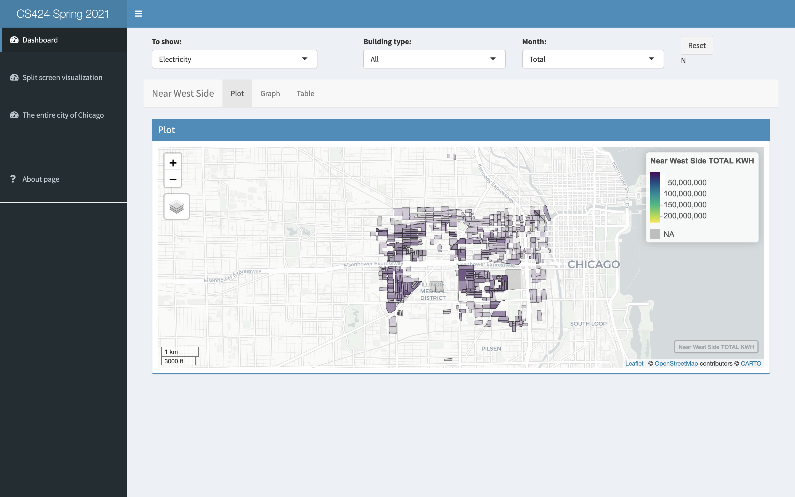
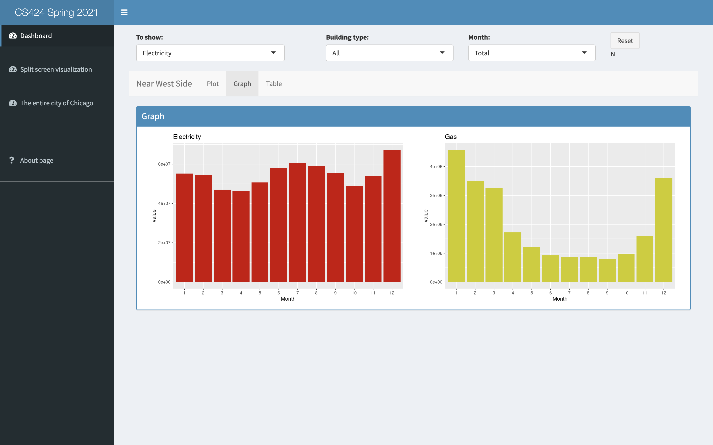
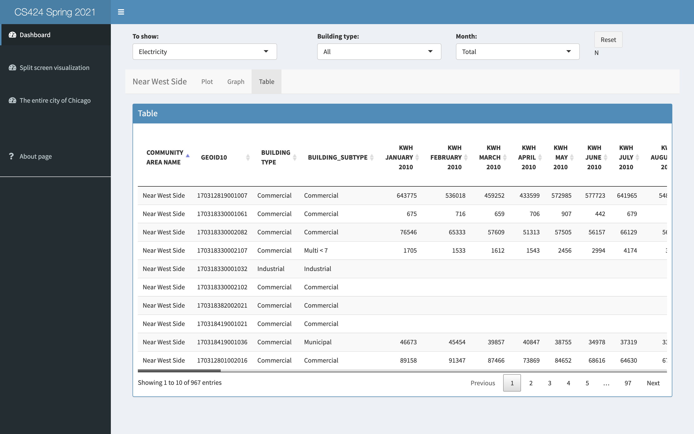
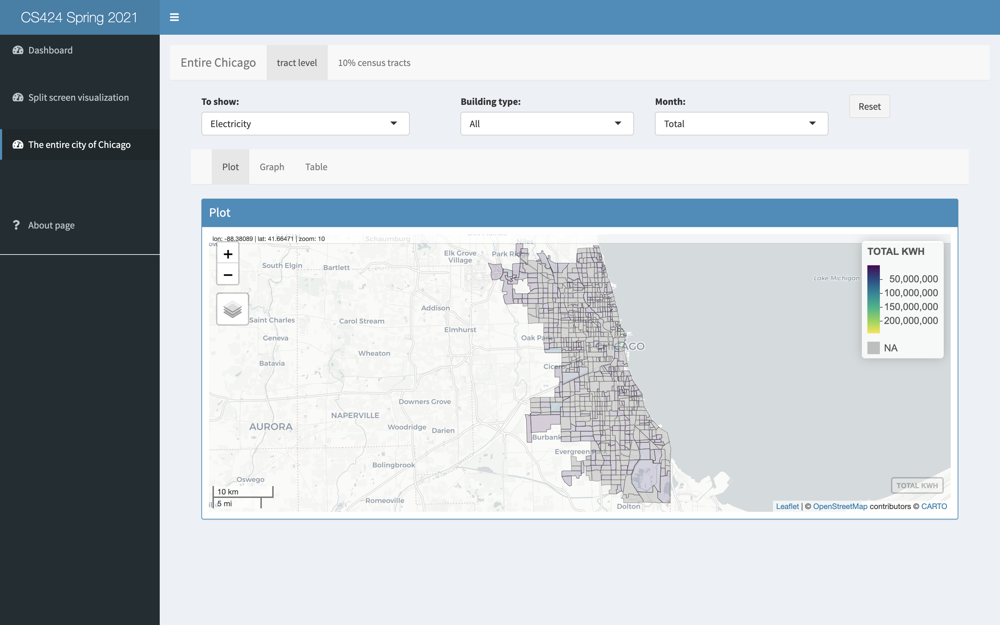
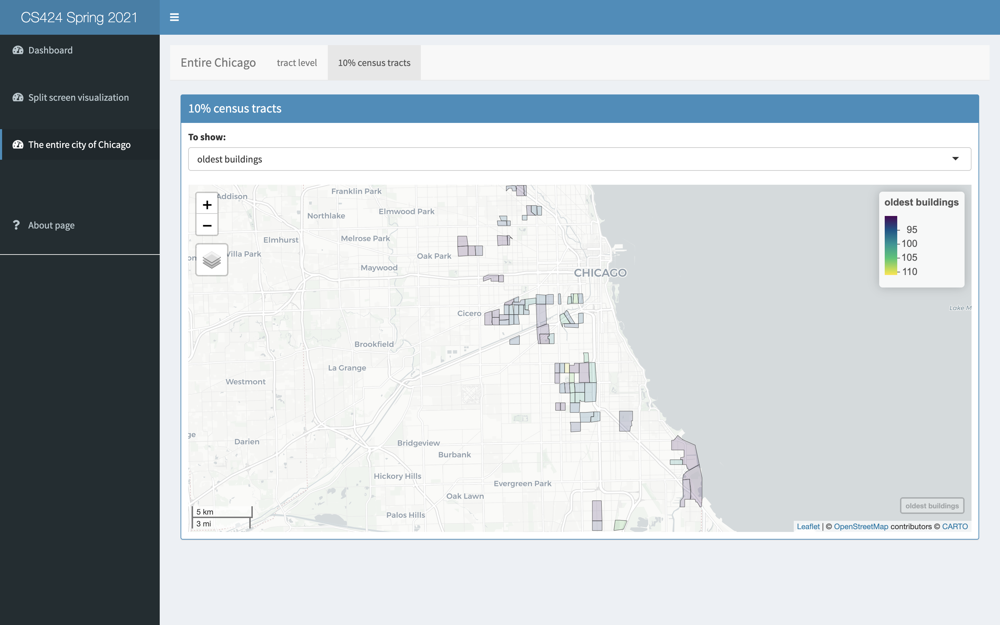
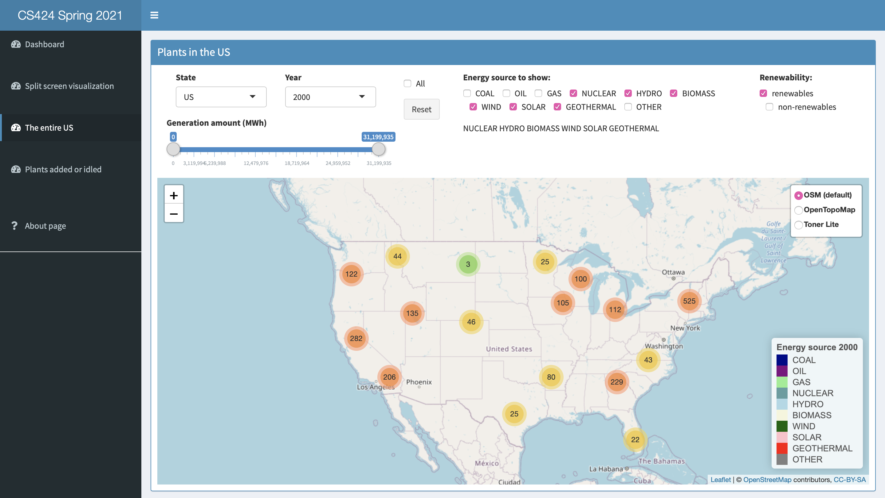
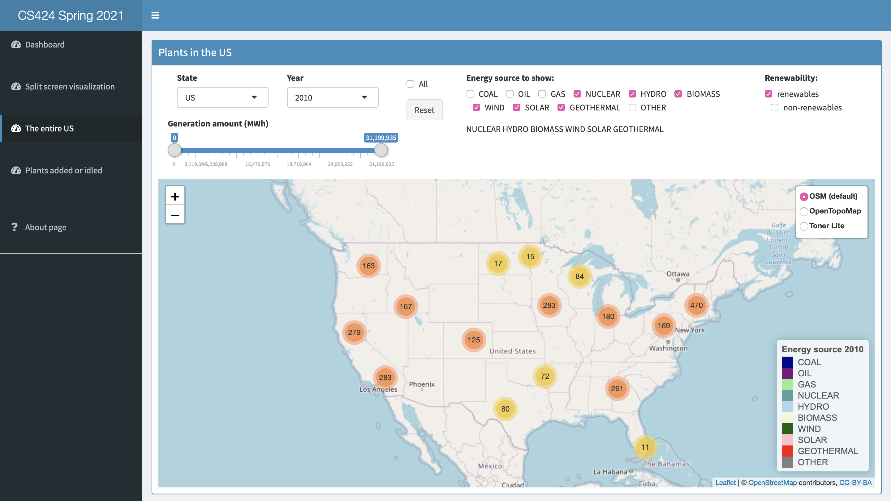
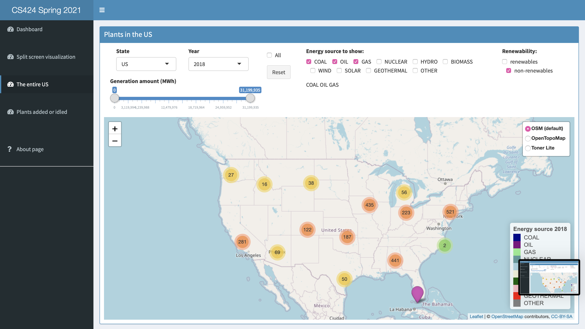

Project 3

Introduction
This project will focus on using R to visualize data on electrical power usage in Chicago in 2010, and use shiny to give people an interactive interface to create those visualizations.
Here we are going to look at data on electricity and gas usage by census block in the city of Chicago to see how neighborhoods, types of buildings, age of buildings can affect how much power is used throughout the year. This project can also serve as a model for looking at other kinds of census data related to the Chicago (or other areas of the US).
Different from project 2, we use Mapview, which is one of the most popular open-source libraries for interactive maps, to visualize the data.
How to run this applicationThere are three sections for this app —- Near West Side, Split screen visualization, Entire city of Chicago at the tract level.
Near West SideIn this page, it shows a properly centered and scaled mapview map of the Near West Side Community Area.
For input control, There are three select inputs and one reset button.
The first one allows the user to choose to see Gas or Electricity or Building Age or Building Type or Building Height or Total Population.
The second one allows the user to filter out one particular kind of building type or to see all building types.
If the first input is choosed to be Gas or Electricity, the user will then pick a particular month or the total for the entire year to display.
The reset button allows the user to return all parameters to the default settings.
When the parameters are set, the display is divided into three parts -- Mapview, Graph, Table
By default it should show the total electrical usage over the entire year as a heatmap.
And it adjust the attribute to be rendered of the heat map according to the user's selection on the display input.



Split screen visualization
We split the screen in two allowing users to compare the data in different community area. By default the left should show the Near West Side and the right should show the Loop with appropriately scaled and zoomed maps.
The display on both sides is based on the previous section.
Entire city of Chicago at the tract level
Compared with the above two pages, in this section, we integrate the data from the census blocks into census tracts and allow the user to show the same data as above at the tract level for the entire City of Chicago.
The other new feature is that there is one tab allowing the user to show the 10% census tracts within the entire city with the:
Data
Source
The original data is available from kaggle.
and also available at Chicago Data Portal.
Content
Displays several units of energy consumption for households, businesses, and industries in the City of Chicago during 2010. Electric The data was aggregated from ComEd and Peoples Natural Gas by Accenture. Electrical and gas usage data comprises 88 percent of Chicago's buildings in 2010. The electricity data comprises 68 percent of overall electrical usage in the city while gas data comprises 81 percent of all gas consumption in Chicago for 2010.
Census blocks with less than 4 accounts is displayed at the Community Area without further geographic identifiers. This dataset also contains selected variables describing selected characteristics of the Census block population, physical housing, and occupancy.
In this project, I did not make changes to the data file before loading it into R.
Columns in this Dataset
Columns in this Dataset
There are 73 columns in the dataset, I am going to introduce a few that I use here.
COMMUNITY AREA NAME: Community Name
CENSUS BLOCK: Census Block number obtained in the address matching/geocoding algorithms. Blank Census Blocks correspond to data that was aggregated to the Community Area due to privacy issues.
BUILDING TYPE: Building Type: Residential, Commercial, Industrial. Blank data corresponds to blank Census Blocks.
KWH JANUARY 2010: Kilowatt hours (kWh) for January 2010
KWH FEBRUARY 2010: Kilowatt hours (kWh) for February 2010
KWH MARCH 2010: Kilowatt hours (kWh) for March 2010
KWH APRIL 2010: Kilowatt hours (kWh) for April 2010
KWH MAY 2010: Kilowatt hours (kWh) for May 2010
KWH JUNE 201: Kilowatt hours (kWh) for June 2010
KWH JULY 2010: Kilowatt hours (kWh) for July 2010
KWH AUGUST 2010: Kilowatt hours (kWh) for August 2010
KWH SEPTEMBER 2010: Kilowatt hours (kWh) for September 2010
KWH OCTOBER 2010: Kilowatt hours (kWh) for October 2010
KWH NOVEMBER 2010: Kilowatt hours (kWh) for November 2010
KWH DECEMBER 2010: Kilowatt hours (kWh) for December 2010
TOTAL KWH: Total 2010 kWh from ComEd accounts.
THERM JANUARY 2010: Therm consumption for January 2010.
THERM FEBRUARY 2010: Therm consumption for February 2010.
THERM MARCH 2010: Therm consumption for March 2010.
TERM APRIL 2010: Therm consumption for April 2010.
THERM MAY 2010: Therm consumption for May 2010.
THERM JUNE 2010: Therm consumption for June 2010.
THERM JULY 2010: Therm consumption for July 2010.
THERM AUGUST 2010: Therm consumption for August 2010.
THERM SEPTEMBER 2010: Therm consumption for September 2010.
THERM OCTOBER 2010: Therm consumption for October 2010.
THERM NOVEMBER 2010: Therm consumption for November 2010.
THERM DECEMBER 2010: Therm consumption for December 2010.
TOTAL THERMS: Total 2010 Therms from Peoples accounts.
TOTAL POPULATION: Total population from Census 2010 report (QT-P6) Race alone or in combination and Hispanic or Latino 2010.
AVERAGE STORIES: Average number of stories based on data from Cook County Assessor's Office.
AVERAGE BUILDING AGE: Average Age of the buildings based on data from Cook County Assessor's Office.
OCCUPIED UNITS PERCENTAGE:
RENTER-OCCUPIED HOUSING PERCENTAGE: Percentage of occupied housing units that are renters from Census report (QT-H2) Tenure, Household Size and Age of Householder
| Column | Description |
|---|---|
| Alfreds Futterkiste | Maria Anders |
| Centro comercial Moctezuma | Francisco Chang |
| Ernst Handel | Roland Mendel |
| Island Trading | Helen Bennett |
| Laughing Bacchus Winecellars | Yoshi Tannamuri |
| Magazzini Alimentari Riuniti | Giovanni Rovelli |
Interesting things I found
1 Renewable energy plants in 2000, 2010 and 2018
I use the third visualization to see the renewable sources in the entire US. Compare difference between 2000, 2010, 2018. We can easily see the trend that the number of renewable energy plants has been rising.


2 Non-renewable energy plants in 2000, 2010 and 2018
Next, let’s see the variation of non-renewable energy plants across 2000, 2010, 2018.
Variation in the total amount of non-renewable energy plants is relatively small.
2429 (2000)-> 2637 (2010)-> 2579 (2018)


Introduction video